(1)
A shape is a magenta ellipse and exactly four shapes are ellipses.
A magenta cross is bigger than a red shape if and only if not all shapes are blue ellipses.
More than four shapes are yellow semicircles or a shape is a magenta cross.
At most a quarter of the shapes are magenta crosses if and only if a shape is a gray cross.
A gray cross is below a magenta cross if and only if a yellow shape is to the right of a blue shape.

(2)
A yellow triangle is the same color as a square and at least three squares are yellow shapes.
At most two shapes are blue shapes if and only if exactly three shapes are gray squares.
If a square is a yellow shape a pentagon is a yellow shape.
A shape is a yellow square and there is a triangle.
A shape is a yellow shape or a shape is a gray square.

(3)
More than five shapes are gray shapes and there is a semicircle.
A yellow semicircle is darker than a gray semicircle or there is a yellow rectangle.
A semicircle is above a magenta shape and a square is a blue shape.
A shape is a rectangle or at least four ellipses are magenta shapes.
A semicircle is the same color as a gray shape if and only if a triangle is closer to a green rectangle than a gray ellipse.

(4)
At most a third of the shapes are yellow pentagons if and only if a green square is closer to a yellow pentagon than a cyan square.
If a pentagon is a different color from a pentagon a pentagon is a yellow shape.
If a yellow shape is a pentagon there is a semicircle.
There is a square and a shape is a yellow pentagon.
If less than half the shapes are green squares a magenta shape is a pentagon.
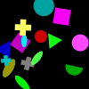
(5)
A yellow shape is behind a yellow ellipse and a yellow shape is a different color from a triangle.
If there is a yellow ellipse a shape is a yellow cross.
A yellow shape is smaller than a yellow ellipse and a square is the same color as a yellow shape.
Not no shape is a yellow semicircle or a yellow square is closer to a gray circle than a yellow shape.
A green triangle is smaller than a blue triangle or a rectangle is lighter than a yellow ellipse.

(6)
Exactly a third of the shapes are red shapes or a yellow shape is a different shape from a red cross.
A square is to the right of a square or a gray shape is to the right of a red square.
If there is a gray shape not one shape is a red shape.
A shape is a gray cross if there is a cross.
A shape is a blue square or not one gray shape is a square.
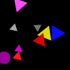
(7)
A cross is the same color as a green circle or a triangle is the same color as a cyan semicircle.
If a cyan semicircle is closer to a green cross than a cyan shape a triangle is a blue shape.
A shape is a cyan cross and a shape is a green rectangle.
Less than two shapes are cyan shapes if and only if a shape is a cyan shape.
A rectangle is above a cyan shape if and only if a semicircle is the same color as a cyan shape.

(8)
Less than three shapes are ellipses or a red cross is to the left of a yellow shape.
If a cross is a magenta shape a yellow shape is smaller than a cross.
A blue shape is above a red triangle or there is a blue circle.
There is a blue cross and there is a magenta triangle.
If more than one rectangle is a red shape there is a semicircle.

(9)
More than half the shapes are yellow shapes or a shape is a green triangle.
A magenta cross is bigger than a cross and a triangle is a magenta shape.
If at least half the triangles are yellow shapes a green cross is above a cross.
There is a magenta cross or a cross is darker than a green triangle.
A yellow cross is in front of a green shape if and only if a yellow shape is behind a green cross.

(10)
Exactly two thirds of the shapes are magenta rectangles if and only if there is a magenta cross.
A cross is a magenta shape if a magenta shape is a rectangle.
A magenta rectangle is the same color as a rectangle and a green shape is a different shape from a magenta rectangle.
A shape is a green shape if and only if at least a third of the rectangles are magenta shapes.
If exactly zero shapes are blue shapes a magenta shape is farther from a cyan shape than a rectangle.

(11)
A rectangle is darker than a blue semicircle if and only if a yellow cross is closer to a blue shape than a semicircle.
At least one shape is a circle and there is a blue shape.
If a yellow circle is the same color as a circle a blue semicircle is lighter than a blue cross.
A green shape is darker than a semicircle or a magenta shape is smaller than a yellow semicircle.
There is a yellow circle and not two shapes are crosses.

(12)
A cyan shape is bigger than a red rectangle if and only if a cross is the same shape as a cyan shape.
Less than all shapes are red ellipses if and only if a red rectangle is darker than a red shape.
A yellow shape is above a green shape if and only if a shape is an ellipse.
There is a yellow ellipse or a green cross is a different shape from a rectangle.
A rectangle is darker than a red shape and more than zero cyan shapes are rectangles.
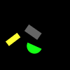
(13)
At least two yellow shapes are crosses and a cyan shape is closer to a yellow ellipse than a yellow pentagon.
If a magenta pentagon is bigger than a yellow pentagon there is a cyan pentagon.
If a yellow cross is to the left of a pentagon exactly two shapes are green pentagons.
Exactly one shape is a cross if a shape is a pentagon.
There is a green ellipse or a yellow ellipse is darker than a green ellipse.
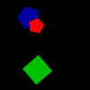
(14)
A green ellipse is lighter than a circle and a semicircle is the same color as a blue shape.
A red shape is a circle if and only if there is a magenta shape.
If a red circle is darker than a red shape a red shape is smaller than a cyan circle.
At least three shapes are pentagons if there is a red circle.
A shape is a blue square and a shape is a blue semicircle.
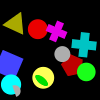
(15)
There is a yellow shape if a triangle is farther from a red pentagon than a pentagon.
At most two thirds of the shapes are cyan crosses and a cyan pentagon is closer to a red pentagon than a cyan pentagon.
If a blue shape is darker than a pentagon a red pentagon is farther from a red pentagon than a cyan pentagon.
A shape is a yellow shape or a square is below a cyan shape.
A shape is a blue pentagon if there is a pentagon.

(16)
If at most three shapes are circles a triangle is the same color as a red shape.
A shape is a blue square and there is a yellow shape.
A blue triangle is to the right of a red triangle or a triangle is to the left of a magenta semicircle.
More than a quarter of the shapes are magenta circles or a magenta semicircle is above a blue semicircle.
There is a blue semicircle if and only if there is a green ellipse.
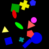
(17)
A shape is a green shape or a blue square is farther from a cyan square than a red rectangle.
Not a quarter of the shapes are green pentagons if and only if a shape is a blue pentagon.
If at least a quarter of the shapes are green pentagons a pentagon is lighter than a green ellipse.
Not all semicircles are gray shapes and a circle is farther from a blue square than a pentagon.
If a shape is a blue square a green shape is a semicircle.
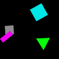
(18)
A semicircle is darker than a cyan cross and a shape is a blue shape.
If not a quarter of the shapes are cyan triangles at least no shape is a cyan cross.
If not a third of the shapes are triangles a cyan triangle is below a cross.
There is a cyan triangle if and only if there is a magenta cross.
A shape is a cyan circle if and only if a shape is a cyan triangle.

(19)
If there is a green rectangle a cross is below a circle.
There is a blue shape or there is a magenta square.
A circle is to the right of a green ellipse if a shape is a pentagon.
If an ellipse is to the left of a green rectangle at most one shape is an ellipse.
A blue shape is a circle or there is a rectangle.
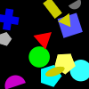
(20)
At least two pentagons are green shapes if and only if a yellow shape is a square.
At most half the shapes are cyan rectangles and less than three cyan shapes are rectangles.
There is a green pentagon and not half the shapes are pentagons.
If there is a cyan cross a red shape is a square.
A green pentagon is behind a gray triangle and a semicircle is a yellow shape.

(21)
If less than four green shapes are pentagons at most two thirds of the pentagons are green shapes.
A red pentagon is the same color as a triangle if and only if at most two pentagons are green shapes.
A green shape is above a pentagon if and only if not four shapes are green shapes.
A pentagon is a red shape and a pentagon is closer to a red triangle than a green pentagon.
If exactly no shape is a triangle a shape is a pentagon.

(22)
At most four shapes are crosses if and only if there is a cyan shape.
If more than four shapes are gray circles a cross is darker than a gray shape.
More than one shape is a gray triangle and a gray circle is farther from a cross than a gray triangle.
If exactly zero shapes are yellow circles there is a cyan shape.
There is a cross and a gray circle is bigger than a gray circle.

(23)
A circle is a different color from a cyan circle and more than three yellow shapes are circles.
There is a yellow ellipse and a circle is farther from a yellow ellipse than a yellow circle.
If a shape is a circle a blue pentagon is closer to a circle than a yellow circle.
Less than three shapes are yellow ellipses and a shape is a yellow shape.
At most one shape is a cyan shape or a magenta shape is smaller than a yellow shape.

(24)
A pentagon is the same color as a blue shape or at most three quarters of the yellow shapes are triangles.
A gray triangle is farther from a gray semicircle than a red shape if and only if less than three shapes are yellow triangles.
There is a green circle if a shape is a semicircle.
There is an ellipse if and only if a cyan shape is behind a yellow shape.
If a semicircle is a different color from a yellow triangle at least five shapes are blue pentagons.
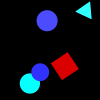
(25)
If a square is closer to a green rectangle than a gray triangle there is a gray triangle.
A shape is a semicircle if and only if a blue shape is an ellipse.
A blue ellipse is below a circle and at least zero shapes are gray circles.
At least two circles are green shapes if and only if exactly two thirds of the shapes are cyan triangles.
At least three quarters of the shapes are blue ellipses if and only if less than four shapes are triangles.
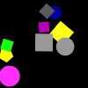
(26)
A magenta ellipse is lighter than an ellipse or there is a square.
There is a blue ellipse if and only if not two rectangles are red shapes.
A shape is a gray cross if and only if exactly no shape is a red ellipse.
There is a red cross or an ellipse is the same color as a green rectangle.
If less than two shapes are yellow shapes a semicircle is darker than a gray ellipse.
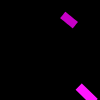
(27)
A pentagon is below a magenta square and there is a semicircle.
If at least a quarter of the shapes are magenta squares a magenta cross is bigger than a magenta shape.
If there is a magenta square a gray square is darker than a square.
There is a square if and only if there is an ellipse.
A shape is a magenta shape and a magenta square is closer to a square than a magenta square.

(28)
If a shape is a magenta ellipse an ellipse is a different color from a yellow circle.
There is a magenta ellipse and a yellow circle is behind a cyan shape.
A shape is a magenta circle or a blue shape is to the left of a green shape.
A cyan square is the same shape as a gray shape or a blue shape is closer to a yellow pentagon than a gray ellipse.
A green pentagon is to the right of a cyan shape if and only if a shape is a red pentagon.
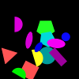
(29)
A shape is a cyan circle if and only if at least two thirds of the shapes are circles.
A circle is to the left of a blue circle and less than five circles are cyan shapes.
A shape is a circle and a blue shape is to the right of a cyan circle.
A shape is a cross or a cyan shape is the same shape as a green circle.
A shape is a gray circle and a blue shape is the same color as a cyan circle.

(30)
There is a green shape or there is a cyan square.
More than three quarters of the red shapes are squares and a yellow square is farther from a blue triangle than a cross.
A yellow shape is a square and a pentagon is to the left of a blue pentagon.
A shape is a triangle if and only if a cyan shape is a semicircle.
If there is a yellow cross a triangle is the same color as a magenta shape.

(31)
If there is an ellipse a shape is a red triangle.
A red shape is an ellipse and not zero shapes are red pentagons.
There is a red shape and less than two red shapes are ellipses.
A shape is a cross or a magenta shape is an ellipse.
If more than four shapes are ellipses a shape is a red ellipse.

(32)
A gray pentagon is closer to a pentagon than a green shape and a shape is a gray pentagon.
More than three shapes are green shapes or a gray pentagon is to the left of a green pentagon.
Not no shape is a pentagon and a shape is a gray ellipse.
A pentagon is smaller than a gray shape if and only if a green shape is the same shape as a gray pentagon.
If exactly one pentagon is a green shape a shape is a gray shape.

(33)
A semicircle is smaller than a gray shape and a circle is farther from a red shape than a circle.
A shape is a cyan shape or there is a gray cross.
A yellow shape is bigger than a gray circle if and only if a shape is a circle.
A gray shape is a circle or a shape is a magenta circle.
If a red shape is the same color as a circle a circle is a magenta shape.
(34)
A green shape is a circle if and only if a shape is a green pentagon.
A circle is above a green shape and a blue cross is the same shape as a red shape.
More than a quarter of the shapes are gray shapes or there is a magenta cross.
More than two pentagons are yellow shapes if and only if a blue shape is a cross.
A shape is a rectangle or there is a rectangle.

(35)
A cyan ellipse is farther from a semicircle than a yellow shape or a semicircle is a cyan shape.
A shape is a green semicircle and a yellow cross is farther from a magenta cross than a red semicircle.
Exactly a third of the shapes are gray crosses and a green shape is a different shape from a cyan ellipse.
If a cross is above a cyan shape a shape is a yellow shape.
At most five yellow shapes are crosses or a cross is a cyan shape.
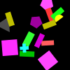
(36)
A cyan shape is a shape different from an ellipse or a cyan shape is a triangle.
A shape is a gray shape if and only if a shape is a yellow triangle.
A semicircle is the same color as a blue ellipse and a blue ellipse is below a red shape.
A red shape is below a blue ellipse or not two shapes are pentagons.
There is a red triangle if an ellipse is the same shape as a green shape.

(37)
A rectangle is the same color as a red shape and a gray shape is in front of a pentagon.
If a red triangle is a different color from a pentagon a gray shape is closer to a green pentagon than a red shape.
There is a rectangle or there is a square.
If a red shape is to the left of a yellow circle not two thirds of the pentagons are green shapes.
If a shape is a red circle a gray shape is a semicircle.

(38)
At least a quarter of the crosses are green shapes or exactly a third of the shapes is green shapes.
A shape is a magenta cross or less than a quarter of the circles are green shapes.
If a green shape is bigger than a magenta circle a gray shape is bigger than a red semicircle.
A cyan cross is the same color as a cross or a cross is darker than a green shape.
A gray circle is farther from a gray circle than a green square if and only if more than five shapes are squares.

(39)
A gray triangle is to the right of a magenta pentagon if and only if a cross is a gray shape.
Not a third of the circles are red shapes or not four shapes are cyan semicircles.
A cyan shape is bigger than a gray shape or a rectangle is a different color from a cross.
If there is a circle a cyan shape is below a yellow square.
If a shape is a yellow semicircle a shape is a magenta circle.
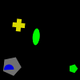
(40)
If a shape is a cyan shape a cross is behind a cross.
If there is a red triangle a shape is a magenta ellipse.
A red shape is the same shape as a red ellipse and a shape is a cyan cross.
Not two red shapes are crosses if a cyan shape is closer to a red cross than a cyan cross.
A cross is a cyan shape if and only if a cross is the same color as a cyan cross.
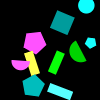
(41)
A gray shape is behind a gray square if and only if more than two thirds of the shapes are yellow shapes.
A yellow square is farther from a yellow cross than a green rectangle or there is a cyan cross.
There is a gray rectangle or a shape is a rectangle.
Either a square is a different color from a yellow cross or a gray cross is to the left of a yellow cross.
If a gray shape is closer to a yellow shape than a yellow cross a shape is a yellow rectangle.
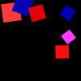
(42)
A cross is in front of a gray shape if and only if an ellipse is lighter than a gray semicircle.
A shape is a cross or not no shape is a red shape.
A gray shape is a cross if a gray shape is a semicircle.
If a gray shape is to the left of a gray cross there is a green shape.
A semicircle is darker than a gray cross and a gray shape is to the right of a gray shape.
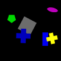
(43)
If a red cross is smaller than a gray shape not three shapes are gray crosses.
There is a gray cross and a gray cross is above a red shape.
A gray shape is the same shape as a red cross if and only if a yellow shape is a cross.
A shape is a red shape or there is a red shape.
More than four shapes are red crosses or a gray cross is bigger than a red shape.
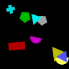
(44)
A cyan cross is darker than a cyan shape if and only if an ellipse is a different color from a cyan circle.
There is a red rectangle and there is a cyan circle.
There is a magenta shape or there is a red semicircle.
If a gray shape is below a cyan rectangle more than five shapes are red crosses.
There is a cyan shape or a shape is a red circle.

(45)
If a yellow shape is a different shape from a green semicircle at least a quarter of the shapes are cyan pentagons.
A magenta pentagon is to the left of a cyan circle or there is a yellow triangle.
A triangle is to the left of a blue circle or a shape is a green square.
If there is a yellow shape a red cross is below a semicircle.
A magenta shape is a pentagon if and only if there is a green triangle.

(46)
More than a third of the shapes are magenta shapes and a shape is a triangle.
If a semicircle is a gray shape a semicircle is the same color as a magenta ellipse.
More than two thirds of the shapes are triangles or there is a blue ellipse.
A magenta shape is the same shape as a red ellipse and there is a magenta pentagon.
If a shape is a blue triangle a semicircle is a blue shape.

(47)
A gray shape is a rectangle and a rectangle is to the left of a gray semicircle.
At least two cyan shapes are rectangles if a magenta square is smaller than a gray shape.
If a magenta shape is a different shape from a cyan square a shape is a green shape.
There is a blue semicircle or a shape is a triangle.
Exactly zero shapes are gray triangles if and only if not two shapes are gray semicircles.

(48)
There is a red square if a cyan rectangle is a different shape from a cyan shape.
There is a cyan square and not a quarter of the shapes are gray shapes.
If exactly five shapes are rectangles there is a square.
Not five shapes are cyan squares or a shape is a cyan rectangle.
More than three shapes are squares or not half the shapes are cyan squares.
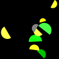
(49)
A pentagon is a different color from a green shape if less than one red shape is a semicircle.
Exactly two crosses are red shapes if a shape is a pentagon.
There is a cross and a gray shape is a cross.
Exactly three quarters of the shapes are green shapes if a magenta shape is a cross.
Either a pentagon is a different color from a green shape or at most one shape is a circle.
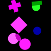
(50)
A green shape is closer to a rectangle than a green triangle if and only if more than a third of the gray shapes are circles.
There is a blue rectangle if and only if a yellow shape is a rectangle.
A green shape is smaller than a green circle and there is a green rectangle.
Exactly four shapes are circles if and only if exactly two thirds of the shapes are blue shapes.
If a circle is farther from a circle than an ellipse a semicircle is below a green shape.
(51)
If a cyan shape is behind a red semicircle there is a yellow shape.
A cyan pentagon is below a red square if and only if a blue pentagon is smaller than a pentagon.
An ellipse is lighter than a green triangle if and only if a cyan shape is a different shape from a green triangle.
At least two shapes are gray shapes if and only if a green semicircle is to the right of a red semicircle.
A triangle is the same color as a green semicircle if and only if a green triangle is below a semicircle.

(52)
A square is a gray shape and a red shape is below a gray triangle.
A green shape is below a gray triangle or a triangle is above a magenta shape.
Exactly one magenta shape is a cross if a shape is a triangle.
If there is a gray semicircle a semicircle is behind a red pentagon.
There is a cross and a gray square is to the right of a gray square.

(53)
A cyan circle is behind a circle if and only if more than four shapes are cyan circles.
If more than zero circles are cyan shapes less than four semicircles are magenta shapes.
A shape is a gray shape and a cyan circle is darker than a circle.
There is a blue cross if and only if more than two green shapes are circles.
Exactly four crosses are cyan shapes if and only if there is a magenta cross.

(54)
A red cross is a different color from a pentagon and exactly two semicircles are green shapes.
A shape is a red cross if and only if more than three quarters of the shapes are red shapes.
A green semicircle is to the left of a green shape if and only if a shape is a gray semicircle.
If a red shape is closer to a semicircle than a green pentagon a shape is a green pentagon.
If a shape is a pentagon a blue shape is bigger than a green pentagon.

(55)
A shape is a semicircle and a triangle is a cyan shape.
More than three magenta shapes are triangles if and only if a blue rectangle is below a blue square.
If less than two shapes are yellow shapes a triangle is above a circle.
A cyan shape is a different shape from a cross if and only if a magenta semicircle is below a cross.
A cyan shape is closer to a cyan shape than a magenta cross and a rectangle is a yellow shape.

(56)
If there is a cyan cross a blue shape is to the left of a cyan triangle.
A shape is a cyan shape and a cyan shape is a different shape from a square.
A shape is a cyan shape and a triangle is a cyan shape.
A gray triangle is to the left of a cyan rectangle and a triangle is behind a gray triangle.
If a cyan shape is a different shape from a cyan triangle a cyan shape is a triangle.

(57)
A green pentagon is bigger than a gray pentagon or at least five shapes are green ellipses.
At least no shape is an ellipse and exactly no shape is a gray shape.
A magenta shape is a circle or a semicircle is a cyan shape.
A shape is a rectangle and a shape is a cyan pentagon.
A cyan pentagon is farther from a magenta cross than a yellow ellipse or a green pentagon is below a magenta ellipse.

(58)
At least a quarter of the shapes are magenta squares or a blue shape is the same shape as a triangle.
If a green shape is the same shape as a cross a blue ellipse is a different color from a circle.
If an ellipse is to the right of a magenta shape a triangle is lighter than a magenta triangle.
If at most all shapes are blue ellipses more than two thirds of the shapes are cyan circles.
A magenta shape is the same shape as a cyan circle and a blue square is darker than an ellipse.

(59)
Less than four shapes are magenta semicircles or there is a blue square.
If not all circles are red shapes exactly four semicircles are magenta shapes.
There is a blue triangle or a circle is the same color as a red rectangle.
A blue shape is closer to a circle than a magenta pentagon or a circle is farther from a rectangle than a yellow semicircle.
A circle is the same color as a blue shape or at least two thirds of the red shapes are rectangles.
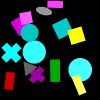
(60)
A green shape is farther from a red ellipse than an ellipse and there is a magenta ellipse.
A cross is lighter than a red triangle and a shape is a magenta ellipse.
A square is above a red ellipse if and only if a shape is a magenta shape.
Exactly a third of the shapes are ellipses if and only if there is a red ellipse.
A shape is a magenta triangle or a shape is a magenta shape.
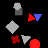
(61)
A yellow shape is above a gray shape if and only if a gray rectangle is to the left of a red ellipse.
A blue pentagon is behind a gray triangle or there is a magenta square.
There is a magenta circle and there is a pentagon.
A pentagon is farther from a yellow pentagon than a semicircle and at most three squares are red shapes.
A semicircle is the same color as a blue pentagon and a magenta triangle is farther from a green shape than a gray rectangle.
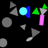
(62)
If at most two shapes are crosses a green shape is the same shape as a blue cross.
More than zero shapes are circles and a circle is above a cyan shape.
A magenta semicircle is to the left of a gray semicircle if and only if a red shape is a rectangle.
A blue shape is darker than a blue cross and a shape is a magenta shape.
Exactly half the shapes are pentagons or a circle is a green shape.
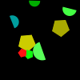
(63)
A shape is a magenta shape and there is a green shape.
There is an ellipse if and only if less than two shapes are rectangles.
Exactly zero shapes are pentagons or a pentagon is smaller than a green shape.
A blue shape is the same shape as a green pentagon if and only if a green shape is an ellipse.
Exactly three shapes are green ellipses or a shape is a red ellipse.
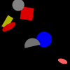
(64)
A triangle is the same color as a square and more than four shapes are green shapes.
Exactly a third of the shapes are circles if and only if a semicircle is a different color from a blue circle.
A circle is closer to a blue shape than a pentagon or more than zero shapes are gray shapes.
If at least two shapes are magenta crosses at most a quarter of the squares are green shapes.
There is a yellow ellipse if and only if not two thirds of the shapes are triangles.

(65)
An ellipse is below a pentagon or at least a quarter of the cyan shapes are pentagons.
If a cyan shape is an ellipse at most three shapes are magenta pentagons.
A cyan shape is a circle if and only if at most all magenta shapes are pentagons.
A shape is a magenta circle and a pentagon is above a cyan shape.
If there is a cyan circle a cyan ellipse is below a magenta pentagon.
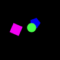
(66)
There is a green rectangle if and only if not two blue shapes are semicircles.
A gray circle is closer to an ellipse than a gray shape if and only if there is a green ellipse.
A triangle is the same shape as a blue shape and at most a quarter of the ellipses are yellow shapes.
A yellow shape is a square or exactly three quarters of the shapes are triangles.
Exactly one gray shape is an ellipse if and only if at least one red shape is an ellipse.
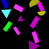
(67)
At most four shapes are yellow pentagons and a yellow pentagon is bigger than a yellow shape.
There is a gray pentagon and a shape is a green rectangle.
A shape is a yellow pentagon and there is a yellow shape.
At most two thirds of the pentagons are yellow shapes if and only if a shape is a magenta shape.
There is a yellow shape or there is a red cross.
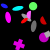
(68)
A shape is a magenta shape and a yellow circle is to the left of a cyan triangle.
A yellow shape is lighter than a yellow rectangle and at least a quarter of the shapes are yellow shapes.
If at least two circles are yellow shapes an ellipse is darker than a yellow circle.
If a shape is a cyan shape a shape is a yellow ellipse.
A blue shape is a different shape from a cross or a cyan ellipse is a different shape from a yellow shape.

(69)
Exactly three pentagons are green shapes if and only if there is a magenta shape.
There is a green shape if and only if a red shape is to the right of a green semicircle.
If less than half the shapes are green semicircles a green semicircle is to the left of a red shape.
If there is a green cross a green shape is smaller than a cross.
At least one shape is a green shape if and only if more than four shapes are green squares.

(70)
A blue shape is the same color as a blue circle or there is a circle.
If there is a red ellipse an ellipse is a gray shape.
Not three shapes are circles if more than two thirds of the shapes are blue shapes.
If less than half the shapes are blue circles exactly no shape is a blue ellipse.
There is a yellow shape and a shape is a circle.
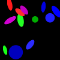
(71)
There is a green shape and a green shape is smaller than a yellow shape.
A shape is a yellow pentagon and a gray shape is smaller than a yellow pentagon.
At least four shapes are semicircles if a shape is a yellow shape.
Exactly a quarter of the shapes are pentagons if more than three quarters of the yellow shapes are pentagons.
A pentagon is a green shape if and only if there is a green pentagon.
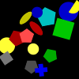
(72)
A red shape is a circle if and only if there is a cyan square.
At most one red shape is a square or there is a red pentagon.
A green shape is the same color as a square and a shape is a red triangle.
A square is lighter than a blue shape or a shape is a green semicircle.
A square is a red shape if and only if a square is the same color as a red square.
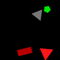
(73)
A cyan shape is bigger than a yellow circle or a circle is lighter than a red circle.
If exactly three quarters of the circles are cyan shapes a red shape is a circle.
More than three shapes are squares or at least a third of the yellow shapes is pentagons.
If there is a red circle a pentagon is a red shape.
A pentagon is to the left of a blue pentagon or less than three pentagons are yellow shapes.

(74)
At most two thirds of the triangles are green shapes and a red shape is a square.
A gray ellipse is above a green ellipse or a blue ellipse is to the right of a semicircle.
An ellipse is darker than a gray rectangle or not a third of the red shapes is triangles.
A pentagon is the same color as a red square if and only if there is a gray ellipse.
A magenta shape is a cross and a triangle is darker than a triangle.

(75)
Less than two shapes are circles if and only if less than a third of the shapes are cyan crosses.
If there is a yellow ellipse a yellow shape is a circle.
If at most all shapes are cyan crosses a shape is a cyan rectangle.
If a yellow circle is to the right of a cross a circle is a magenta shape.
A shape is a magenta ellipse or more than half the shapes are crosses.
(76)
A semicircle is lighter than a green triangle if and only if a triangle is darker than a gray triangle.
There is a magenta semicircle or a gray shape is the same color as a square.
If a triangle is smaller than a blue shape a red shape is bigger than a triangle.
A triangle is darker than a gray square if and only if a green triangle is closer to a magenta triangle than a yellow rectangle.
A yellow shape is below a cross if and only if a magenta triangle is smaller than a blue shape.
(77)
An ellipse is a cyan shape if and only if there is a yellow shape.
A green shape is a triangle or a shape is a red ellipse.
A shape is a gray triangle if and only if not a quarter of the shapes are gray semicircles.
A triangle is darker than a cyan triangle or an ellipse is the same color as a magenta shape.
Either a circle is a different shape from a red shape or a yellow shape is bigger than a magenta shape.

(78)
A shape is a red circle and an ellipse is darker than a blue rectangle.
A blue rectangle is closer to a blue rectangle than a circle and less than three quarters of the shapes are rectangles.
If a gray square is behind a blue shape a blue square is darker than a rectangle.
A shape is a green shape if a shape is a rectangle.
A cyan ellipse is farther from a blue shape than a red circle and a shape is a red shape.

(79)
If a shape is a green pentagon a magenta shape is a different shape from a green pentagon.
If more than two thirds of the green shapes are pentagons not two shapes are green pentagons.
If a green pentagon is to the right of a blue shape there is a green pentagon.
There is a pentagon if and only if at least two green shapes are pentagons.
More than four shapes are green shapes if a green shape is a pentagon.

(80)
A shape is a triangle and not a quarter of the triangles are gray shapes.
A shape is a magenta shape if and only if a gray shape is a triangle.
If not a third of the shapes are red shapes less than five shapes are red circles.
There is a circle and a shape is a gray triangle.
A red triangle is to the left of a triangle or less than a quarter of the shapes are triangles.
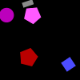
(81)
If at least a third of the shapes are blue ellipses a cross is the same color as a blue shape.
A gray rectangle is bigger than a cyan shape or exactly one shape is a gray rectangle.
An ellipse is closer to an ellipse than a cross or exactly a third of the ellipses is blue shapes.
If there is a triangle a blue ellipse is in front of a magenta shape.
A yellow shape is an ellipse if and only if exactly all blue shapes are ellipses.

(82)
If there is a gray square not two thirds of the shapes are gray squares.
A cyan shape is to the right of a triangle and a green triangle is below a gray square.
A green triangle is above a gray square or there is a magenta triangle.
At most two gray shapes are squares if exactly two thirds of the shapes are gray squares.
A square is a different color from a green triangle if and only if there is a square.

(83)
There is a gray ellipse and there is a pentagon.
A green pentagon is darker than a rectangle and there is a magenta pentagon.
There is a green ellipse and a pentagon is a different color from a blue shape.
If at least one shape is a yellow shape a magenta shape is the same shape as a rectangle.
A yellow shape is a different shape from a blue triangle and a shape is a yellow circle.
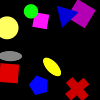
(84)
Less than all shapes are red shapes and there is a red pentagon.
A shape is a red cross if and only if a shape is a red semicircle.
If a shape is a cyan cross a semicircle is above a red cross.
A triangle is a different color from a magenta cross if and only if exactly four shapes are red semicircles.
A rectangle is below a gray triangle or a shape is a cyan triangle.

(85)
If a cyan square is to the left of a triangle at least three pentagons are cyan shapes.
A cyan square is darker than a cyan triangle or exactly two shapes are circles.
A blue shape is an ellipse and a triangle is lighter than a cyan shape.
A cyan shape is the same shape as a green circle or a shape is a magenta cross.
If a red rectangle is to the left of a red shape a magenta ellipse is a different shape from a cyan shape.
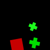
(86)
A cross is a different color from a red semicircle if and only if a red cross is bigger than a red cross.
A shape is a square and a shape is a gray square.
There is a red shape and a magenta shape is a different shape from a red cross.
There is a red pentagon and at most three quarters of the gray shapes are squares.
A gray cross is the same color as a semicircle or a red shape is to the left of a gray semicircle.
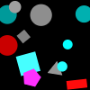
(87)
A shape is a cyan shape and a square is the same color as a blue pentagon.
If at least four shapes are green semicircles at most two thirds of the shapes are blue pentagons.
At least a third of the blue shapes are semicircles if there is a cyan shape.
There is a magenta shape and a square is the same shape as a cyan shape.
A cyan shape is bigger than a yellow circle if and only if less than two shapes are yellow shapes.

(88)
A shape is a yellow triangle and a shape is a cross.
If a shape is a cross not two shapes are yellow triangles.
If more than zero crosses are red shapes there is a blue shape.
More than a third of the shapes are red crosses and a shape is a yellow triangle.
A cross is a red shape if and only if a red shape is a different shape from a triangle.
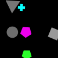
(89)
A cyan shape is below a magenta circle if and only if a yellow ellipse is closer to a blue ellipse than a gray shape.
A cross is a cyan shape or a yellow shape is a cross.
A magenta shape is above a magenta rectangle and an ellipse is to the left of a green shape.
A circle is darker than a red pentagon and a semicircle is a green shape.
If a cyan triangle is farther from a red rectangle than a rectangle a gray shape is smaller than a green circle.
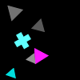
(90)
If a red shape is below a red circle a red semicircle is closer to a gray circle than an ellipse.
A semicircle is a red shape if and only if there is a blue ellipse.
There is a cyan shape or an ellipse is a magenta shape.
There is an ellipse and a pentagon is below a red circle.
Not three quarters of the shapes are green shapes and a gray shape is smaller than an ellipse.
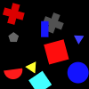
(91)
At least one cross is a gray shape and there is a red ellipse.
An ellipse is the same shape as a red shape and a red shape is smaller than a red circle.
There is a red cross or there is a green circle.
There is a gray ellipse or there is a red shape.
A circle is the same color as a red shape and a shape is a circle.
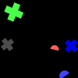
(92)
If a magenta shape is bigger than a yellow square a magenta shape is bigger than a blue square.
A semicircle is a different color from a yellow ellipse and a shape is a green shape.
If not five shapes are cyan shapes there is a red shape.
A yellow shape is the same shape as a red square or a magenta shape is smaller than a gray square.
An ellipse is a yellow shape or more than two thirds of the shapes are green semicircles.

(93)
A gray shape is below a rectangle or at most one ellipse is a magenta shape.
An ellipse is a magenta shape if and only if there is a blue triangle.
A yellow ellipse is a different color from a circle if and only if there is a magenta cross.
A blue circle is to the right of a circle if and only if exactly three shapes are pentagons.
A rectangle is a magenta shape if and only if a shape is a cross.

(94)
A shape is a magenta triangle and a shape is a triangle.
A triangle is a yellow shape or there is a circle.
Not one shape is a magenta triangle if and only if there is a magenta shape.
More than two thirds of the magenta shapes are triangles or exactly zero shapes are ellipses.
More than four shapes are magenta shapes if and only if a shape is a magenta cross.
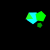
(95)
A yellow circle is in front of a cyan circle if and only if more than a third of the shapes are gray shapes.
A red shape is a cross or there is a gray ellipse.
A shape is a circle or a circle is a yellow shape.
At most three shapes are red ellipses and a yellow shape is smaller than a cyan circle.
If a yellow shape is a different shape from a cyan ellipse exactly three shapes are magenta shapes.

(96)
A red shape is a different shape from a rectangle and a red shape is behind a blue shape.
If a green square is above a red triangle a circle is a red shape.
There is a magenta triangle or a shape is a green shape.
A red shape is smaller than a red triangle if and only if a red triangle is behind a red shape.
A yellow shape is closer to a blue semicircle than a magenta pentagon or a yellow shape is in front of a red triangle.
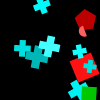
(97)
There is a semicircle or a shape is a circle.
A shape is a magenta shape and a square is a magenta shape.
A shape is a cyan shape or there is a gray semicircle.
Not two shapes are magenta triangles and there is a triangle.
A triangle is a magenta shape and a shape is a magenta triangle.
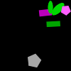
(98)
There is a triangle if and only if a rectangle is a gray shape.
If there is a cyan cross at least a quarter of the shapes are red rectangles.
A shape is a cyan square and at least three quarters of the triangles are red shapes.
There is a magenta shape and a blue shape is a rectangle.
Less than half the shapes are blue shapes if and only if more than a quarter of the shapes are magenta crosses.
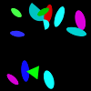
(99)
A semicircle is darker than a cyan circle or not three shapes are red crosses.
More than two thirds of the gray shapes are crosses if and only if exactly two thirds of the blue shapes are crosses.
There is a green cross and exactly two shapes are red rectangles.
A red shape is in front of a magenta cross if and only if a shape is a red rectangle.
A shape is a cross or a red cross is closer to a blue cross than a red cross.

(100)
A shape is a blue square or a magenta ellipse is the same color as a semicircle.
An ellipse is darker than a magenta shape or more than half the shapes are circles.
A circle is a cyan shape and a magenta ellipse is above a magenta semicircle.
There is a gray shape or exactly three quarters of the shapes are magenta shapes.
If a circle is closer to a yellow shape than a magenta semicircle a circle is a magenta shape.